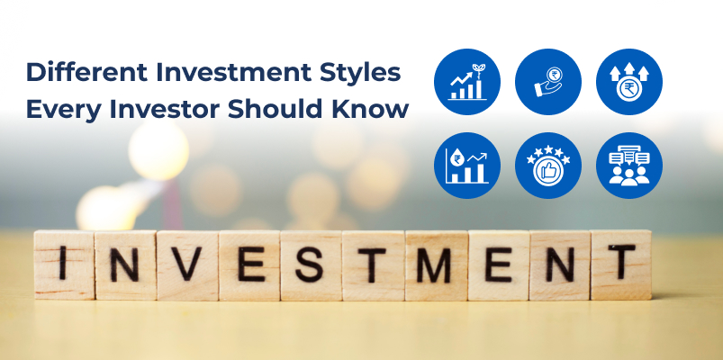

Different Investment Styles Every Investor Should Know

Stepping into investing can feel uncertain at first because there is no single approach that suits everyone. Investment styles differ based on how investors view growth, stability, and opportunities created by market movements.
Clarity comes from knowing your financial goals and understanding how much market volatility you are comfortable with. When your approach aligns with this, it becomes easier to invest in the stock market with confidence instead of reacting to short term market movements.
The Six Core Investment Styles Explained
Before diving deeper, let’s quickly look at the main investment styles and what each one focuses on.
| Investment Style | Focus |
|---|---|
| Growth | Companies with high earnings potential |
| Value | Undervalued companies trading below intrinsic worth |
| GARP | Growth at a reasonable price |
| Momentum | Stocks showing strong price trends |
| Quality | Companies with strong fundamentals and stable earnings |
| Contrarian | Out-of-favor assets with turnaround potential |
Growth Investing: Chasing Tomorrow's Giants
Growth investors are basically betting on companies they think will explode in the coming years. We're talking about tech companies, biotech startups, or any business that's disrupting its industry. These stocks usually look expensive if you just glance at the numbers, but that's because you're paying for what the company will become, not what it is today.
Here's the catch, though. Growth stocks can swing wildly. When things are going well, you feel like a genius. But miss one earnings target and you could see your stock drop. Still, if you look at some of the best performing mutual funds over the last decade, you'll notice most of them were loaded with growth stocks.
Value Investing: The Bargain Hunter's Approach
Value investing is all about finding good companies that are temporarily on sale. Maybe they had a rough quarter, and everyone overreacted. Or perhaps the whole sector is out of favor right now, and nobody's paying attention. Either way, you're buying quality businesses at discounted prices.
This is how Warren Buffett made his fortune. Find solid companies trading below what they're really worth, buy them up, and wait for the market to catch up to reality. The waiting part is crucial here. Sometimes you're sitting on a stock for years before it finally moves. You need patience and conviction to pull this off successfully.
GARP Investing: The Best of Both Worlds
GARP is short for Growth at a Reasonable Price, and honestly, it's one of the most practical approaches out there. You want companies that are growing nicely, but you refuse to pay insane prices for that growth. It's like saying, "yes, I want a sports car, but I'm not paying twice what it's worth."
The way most GARP investors work is by comparing how fast a company is growing versus what you're paying for it. If the numbers make sense and you're not wildly overpaying, it might be worth buying. It's really just common sense investing when you think about it.
Momentum Investing: Riding the Wave
Momentum investors don't really care whether a stock is cheap or expensive based on fundamentals. What they care about is simple. Is the stock going up right now? If yes, buy it. If the trend reverses, get out.
This is pure technical trading. You're looking at charts, watching for patterns, and jumping on stocks that are showing strength. It works until it doesn't, which is why you need to stay alert constantly. Miss your exit signal and you could get caught when momentum flips the other way. Not for the faint of heart or anyone who can't watch the market regularly.
Quality Investing: Stability First
Quality investors want companies that are built to last. Strong balance sheets, steady profits year after year, minimal debt, and businesses with real competitive advantages. Think of companies that have been around forever and will probably still be around decades from now.
Sure, you're not getting these stocks cheap. Quality costs money in the stock market just like everywhere else. But when markets get turbulent, these are the stocks that tend to hold up better than others. If you value sleeping well at night over chasing maximum gains, quality investing might be your thing.
Contrarian Investing: Going Against the Crowd
Contrarian investors deliberately do the opposite of what everyone else is doing. When the market crashes and people are panicking, contrarians are buying. When everything's going great and everyone's euphoric, they're selling and taking profits.
Buying when everyone else is panicking can feel really uncomfortable. But if you study market history, you'll see that the biggest opportunities often show up exactly when sentiment is at its worst. The key is making sure you're being contrarian based on solid research, not just being stubborn or contrarian for its own sake.
Conclusion
All of these investment styles can work well over time if you stick with them during both good and bad markets. What matters most is choosing one that aligns with your goals and doesn’t make you panic when markets move.
At Integrated, we help investors find top mutual funds with clear, disciplined investment approaches, so you're investing with a proper strategy rather than guessing your way through.
Disclaimer - The information provided in this blog is for educational and informational purposes only and should not be considered financial, investment, or legal advice. Investments in securities and mutual funds are subject to market risks, including possible loss of principal. Past performance is not indicative of future results.